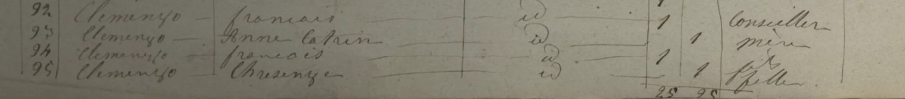
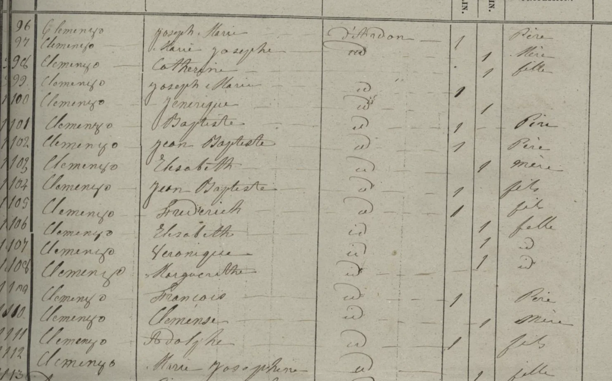

La historia
Josephine nació en Riddes el 19 de marzo de 1843, trece años antes que el siguiente de los hijos de François Clemenzoz — y esa brecha es justamente el corazón de la hipótesis H1 de [[clan-clemenzo]].
Su primera aparición posible es el censo de Ardon de 1846: en las filas 109–112 figura un hogar de François Clemenzo (père) con «Clemense» (mère) y dos hijos, Adolphe y Marie Josephine — de ser el hogar de François Clemenzoz, esa niña de 3 años sería ella, y «Clemense» el primer nombre documentado de su madre.
La foto firme es el recensement fédéral de 1870 (Riddes, Plan de Ville, boletín n.º 14): el hogar de François Clemenzoz y Marie Louise Stalder con los tres varones (Jose Clemenzo, François Clemenzo, Etienne Clemenzo) y, en la línea 6, «Josephine, fille mère», nacida el 19 de marzo de 1843 en Riddes, célibataire, con sus dos hijas en las líneas siguientes: Anaïs (Anaiis Clemenzo), nacida el 25 de enero de 1864, y Edwige (Edwige Clemenzo), nacida el 3 de febrero de 1870. Tenía 27 años, era madre soltera y vivía en el hogar paterno.
Un detalle del boletín: toda la familia figura domiciliada en ese hogar desde 1864 (meses escalonados entre marzo y noviembre) — la mudanza al Plan de Ville coincide con el año en que nació Anaïs.
Cronología
| Año | Fuente | Qué dice |
|---|---|---|
| 1843-03-19 | Recensement 1870 (declaración) / árbol | Nace en Riddes, Valais |
| 1846 | Censo de Ardon, filas 109–112 (hipótesis) | «Marie Josephine», fille de François (père) y «Clemense» (mère), con hermano Adolphe — candidata a ser ella; homónimos sin resolver |
| 1864-01-25 | Recensement 1870 | Nace su hija Anaïs (Anaiis Clemenzo) en Riddes |
| 1864 | Recensement 1870 (col. séjour) | La familia se domicilia en el hogar de Plan de Ville (ella desde noviembre) |
| 1870-02-03 | Recensement 1870 | Nace su hija Edwige (Edwige Clemenzo) en Riddes |
| 1870-12-01 | Recensement fédéral, Riddes, Plan de Ville, boletín n.º 14, l.6 | «Fille mère», célibataire, en el hogar de François Clemenzoz con sus hijas Anaïs y Edwige; sin padre declarado para las niñas |
Qué falta / hipótesis
Su gran diferencia de edad con José (1856), François (1858) y Etienne (1862) sugiere que sería hija de un primer matrimonio de François Clemenzoz con una «Clémence» —fallecida entre 1846 y 1850—, siendo Marie Louise Stalder (Marie Louise Stalder) la segunda esposa. Lo respalda el censo de Ardon de 1846, que registra a «François père» con esposa «Clemense» e hija «Marie Josephine» (hipótesis H1 del post [[clan-clemenzo]]). En el árbol todavía figura con madre Marie Louise Stalder (Stalder): pendiente de confirmar y, de confirmarse, corregir la filiación materna.
¿Quiénes fueron los padres de Anaïs (1864) y Edwige (1870)? Seis años de diferencia dejan abierto si fue el mismo hombre. Y ¿qué fue de Josephine y las nenas después de 1870 — emigraron con los hermanos o se quedaron?
Líneas de investigación
- Buscar bautismos de Anaïs (enero 1864) y Edwige (febrero 1870) en Riddes — confirman madre y quizá nombran padre
- Buscar bautismo de Adolphe Clemenzo ~1838–1845 en Ardon/Riddes — discriminador de la H1
- Buscar acta de matrimonio de François Clemenzoz (׫Clémence» ~1840–43 y ×Stalder ~1850–56) en registros parroquiales de Riddes
- Determinar si emigró a Argentina o permaneció en Suiza — buscar en Registre des émigrés (DI 358, AEV)
Fuentes
- Recensement fédéral 1870 — Riddes, Plan de Ville, boletín n.º 14 (hogar de François Clemenzoz; ella l.6, hijas l.7–8)
- Censo de Ardon 1846 — filas 109–112 (hogar François × Clemense, hipótesis)
Documentos

